Decomposition
In this chapter we will consider different adjusments and transformations one can do prior to a model task. Then we move on to techniques for decomposing a time series into a trend-cycle, season and remainder component.
Calender adjustments
In the example in the video above, we are not interested in a proxy for working days per month, and to avoid the effect of this we use the mean (average) production per working day within each month instead of total production per month. The code to generate the example can be found below:
Code for generating examples:
library(lubridate)
library(tidyverse)
library(fpp3)
# ggplot theme:
theme_set(
theme_bw() +
theme(panel.grid.minor = element_blank(),
panel.grid.major = element_blank())
)
# Daily production:
dat <- tibble(
date = seq(as.Date("2015-01-01"), as.Date("2019-12-31"), by = "1 day"),
price = pi
) %>%
#Removing the weekends:
filter(wday(date, week_start = 1) %in% 1:5) %>%
#Note: We do not remove public holidays, and the worker never takes a day off
mutate(YearMonth = yearmonth(date))
# -- TOTAL PRODUCTION FIGURE --
dat %>%
group_by(YearMonth) %>%
summarize(`Total production` = sum(price)) %>%
as_tsibble(index = "YearMonth") %>%
ggplot(aes(x = YearMonth,
y = `Total production`)) +
geom_point(color = "skyblue") +
geom_line(color = "skyblue") +
scale_y_continuous(breaks = seq(60, 100, 5),
labels = paste0("$",seq(60, 100, 5),"k"),
limits = c(60,75))
# -- MEAN PRODUCTION FIGURE --
dat %>% group_by(YearMonth) %>%
summarize(`Mean production` = mean(price)) %>%
as_tsibble(index = "YearMonth") %>%
ggplot(aes(x = YearMonth,
y = `Mean production`)) +
geom_point(color = "skyblue") +
geom_line(color="skyblue")+
scale_y_continuous(breaks = seq(3, 4, .02),
labels = paste0("$",seq(3, 4, .02),"k"))Population adjustment
Adjusting for population size is usually a good idea when studying a quantity that is affected by it. The most obvious example is to study GDP (Gross Domestic Product) per capita instead of GDP.
Code for generating examples in the video
# --- Setting up the data --
scandinaviaUSA <- global_economy %>%
filter(Country %in% c("Norway","Sweden","Denmark", "United States"))
scandinaviaUSA %>% head()
# --- GDP by country in $US --
scandinaviaUSA %>%
autoplot(GDP)+
labs(title= "GDP", y = "$US")
# --- Population by country --
scandinaviaUSA %>%
autoplot(Population)+
labs(title= "Population", y = "Number of people")
# --- Population by country (log-scale on y-axis) --
scandinaviaUSA %>%
autoplot(Population)+
scale_y_log10()+
labs(title= "Population (log-scale)",y = "Number of people")
# --- GDP per capita by country ---
scandinaviaUSA %>%
autoplot(GDP/Population) +
labs(title= "GDP per capita = GDP / Population", y = "$US")Inflation adjustment
Adjusting for inflation is a simple way of taking into account that 5$ in 1950 would get you much more than 5$ would today. This compensation is usually done by a consumer price index, which is standardized to a specific year (in the video below we show examples with 2010 and 2015 as reference years).
Let Y_t denote the raw time series and Y_t^\star the inflation adjusted. Let \text{CPI}_t denote a relevant consumer price index defined to be 100 in the reference year t^\star. Then Y_t^\star = Y_t \cdot \frac{100}{\text{CPI}_t}. More generally, we can choose the reference year t^\star and write this as Y_t^\star = Y_t \cdot \frac{\text{CPI}_{t^\star}}{\text{CPI}_t}.
The inflation adjusted series is then measured in the unit “year t^\star-money”.
Code for generating examples:
# --- Inflation adjusted GDP per capita by country ---
scandinaviaUSA %>%
autoplot(GDP/Population *100 / CPI) +
labs(title= "GDP per capita = GDP / Population", y = "$US")
# --- CPI FOR NORWAY (data from Statistics Norway)---
CPI <- read.csv("data/CPI_norway.csv", sep = ";") %>% as_tibble() %>%
select(1:2) %>%
rename(Year = X,CPI = Y.avg2) %>%
mutate(Year = as.numeric(Year), CPI = as.numeric(CPI))%>%
filter(Year < 2022) %>%
as_tsibble(index = Year)
# --- CPI figure ---
CPI %>%
autoplot(CPI, color = "blue", lwd = 1.2) +
labs(title= "Consumer Price Index", y = "NOK",
subtitle = "Data source: Statistics Norway")+
geom_hline(yintercept = 100, lty = 2) + geom_vline(xintercept = 2015, lty = 2)+
scale_x_continuous(breaks = seq(1925,2025,10))+
scale_y_continuous(breaks = seq(0,120,10))
# --- BIG MAC price index ---
bigMac <- read_csv("https://raw.githubusercontent.com/TheEconomist/big-mac-data/master/output-data/big-mac-raw-index.csv")
norBigMac <- bigMac %>%
filter(name %in% c("Norway")) %>%
mutate(Year = lubridate::year(date)) %>%
as_tsibble(index = "date")%>%
filter(Year <2022) %>%
left_join(CPI, by = "Year")
# --- BIG MAC price index figure ---
norBigMac %>%
autoplot(local_price) +
labs(title= "Big Mac price in Norway", y = "NOK",
subtitle = "Data source: The Economist") +
geom_smooth(method = "lm", se=FALSE)
#--- Inflation adjusted BIG MAC price index figure ---
norBigMac %>%
mutate(cpiAdjusted =local_price / CPI * 100) %>%
as_tsibble(index = date) %>%
autoplot(cpiAdjusted)+
labs(title= "Inflation adjusted Big Mac price in Norway", y = "NOK (2015)",
subtitle = "Data sources: The Economist (big mac index), Statistics Norway (CPI)") +
geom_smooth(method = "lm", se=FALSE)Mathematical Transformations
In many situations it can be necessary to do a mathematical transformation of a time series. There can be different reasons for doing so, but a main one is to make it stationary (or at least more stationary). For instance, if you see that the variation increases or decreases with the level of the series. The most common transformation (for positive time series) is probably using the logarithm. It is often effective and interpretable as changes in the log value correspond to relative changes in the original scale. We write the transformed series, w_t, as w_t =\log y_t, where y_t is the original time series.
The textbook also mentions power transformations of the form w_t = y_t^p (squarte roots - p=\frac12, cube roots - p=\frac13, etc). These are not as common to use, but there are situations where these may be better than the logarithm.
A family of transformations (including log- and a class of power transformations) is the Box-Cox transform. For any value of \lambda\in \mathbb R, \begin{equation*} w_t = \begin{cases} \log(y_t),&\text{if }\lambda = 0;\\ (y_t^\lambda -1)/\lambda, &\text{otherwise}. \end{cases} \end{equation*} As you can see, if \lambda = 0 we have a simple natural logarithm transform. This version of the Box-Cox transform is also defined for negative values of y_t as long as \lambda >0.
The book has a very nice shiny app for experimenting with different values of \lambda on a time series of gas production in Australia. We have borrowed it below, but you find it also here. They write that: ” A good value of \lambda is one which makes the size of the seasonal variation about the same across the whole series, as that makes the forecasting model simpler.” This pretty much sums up why one does mathematical transformations as a preprocessing step before fitting a model - it makes the model simpler.
For financial assets, such as stocks, it is often better to consider the returns rather than the price series. This is also a mathematical transformation and involves differencing. First order differencing means subtracting the previous observation from the present, i.e. w_t=y_t-y_{t-1}. Taking differences is an effective way of potentially making a non-stationary time series stationary. E.g. if a time series has a linear trend: Y_t = \alpha t + Z_t, where \alpha is a real constant and Z_t is a white noise, we get that W_t = Y_t-Y_{t-1} = \alpha t + Z_t - \alpha(t-1) - Z_{t-1} = Z_t-Z_{t-1} + \alpha, effectively removing the trend in the transformed series. We will return to this when considering ARIMA models.
There are different definitions of returns, but the most common ones are the standard returns, r_t, and log-returns, \textrm{lr}_t, defined respectively by \begin{equation*} \begin{split} r_t &= \frac{y_t-y_{t-1}}{y_{t-1}},\\ \textrm{lr}_t &= \log y_t-\log y_{t-1} = \log\frac{y_t}{y_{t-1}}. \end{split} \end{equation*} A daily return series for a stock usually has expectation close to zero and little autocorrelation, which can be convenient in many situations. However, they are typically hetereoskedastic (non-constant variance) and the squared returns are often autocorrelated. We will come back to this, when discussing volatility forecasting towards the end of the course.
Code on mathematical transformations
# Package for downloading stock data (primarily from Yahoo! Finance)
library(quantmod)
# -- Download the data: --
getSymbols("AAPL")[1] "AAPL"# -- Extract the closing price and create a tsibble: --
close.price <- tibble(
close = as.numeric(AAPL$AAPL.Close),
date = time(AAPL)
) %>% as_tsibble(index = date)
# -- Plot closing price: --
close.price %>% autoplot(close) +
labs(title = "Apple Closing price",
y = "US$")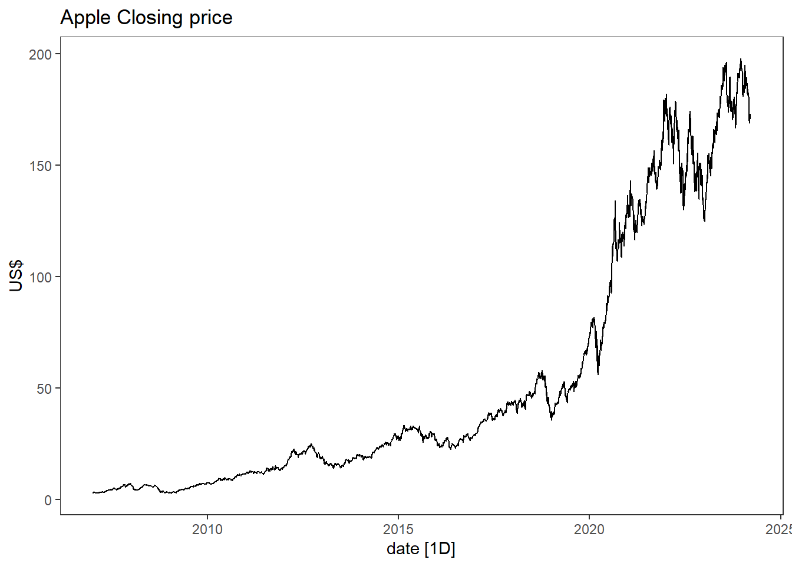
# -- Adding transformations : --
close.price <- close.price %>%
mutate(logclose = log(close), # log-transform
logreturn = c(NA, diff(logclose)), # log returns
return = c(NA, diff(close)/close[-nrow(close.price)]) # Returns
)
# -- Box-cox-transform --
lambda <- close.price %>%
features(close, features = guerrero) %>%
pull(lambda_guerrero)
close.price <- close.price %>%
mutate(boxcox = box_cox(close,lambda))
close.price %>%
autoplot(boxcox) +
labs(y = "",
title = latex2exp::TeX(paste0(
"Transformed apple closing price with $\\lambda$ = ",
round(lambda,3))))+
# Adding red curve with log-transform
geom_line(aes(y=logclose), col = 2) 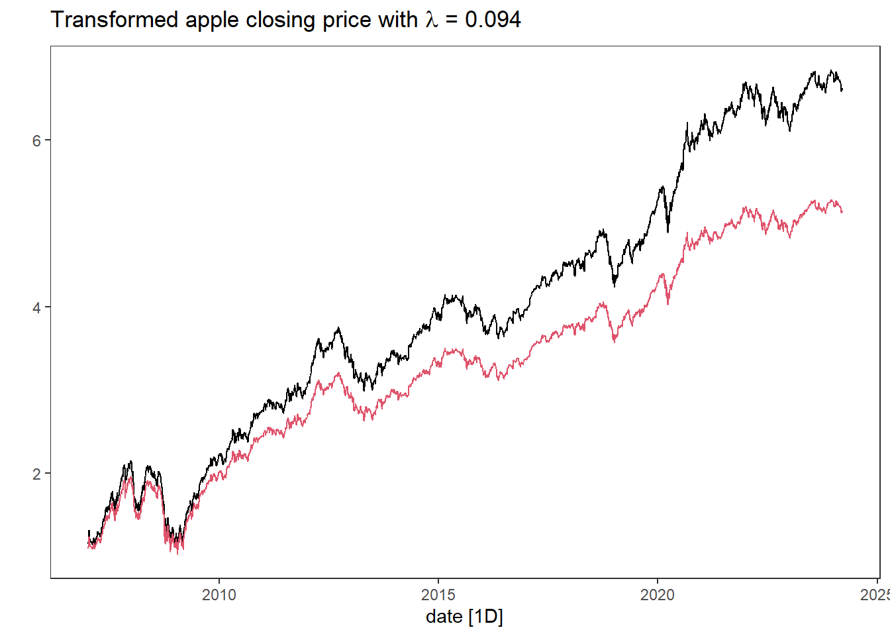
# -- Plotting the different transformations --
close.price %>%
pivot_longer(-date) %>%
autoplot(value) +
facet_wrap(~name, scales="free_y", strip.position = "left")+
labs(title = "Apple Closing Price transformations") +
theme(strip.placement = "outside")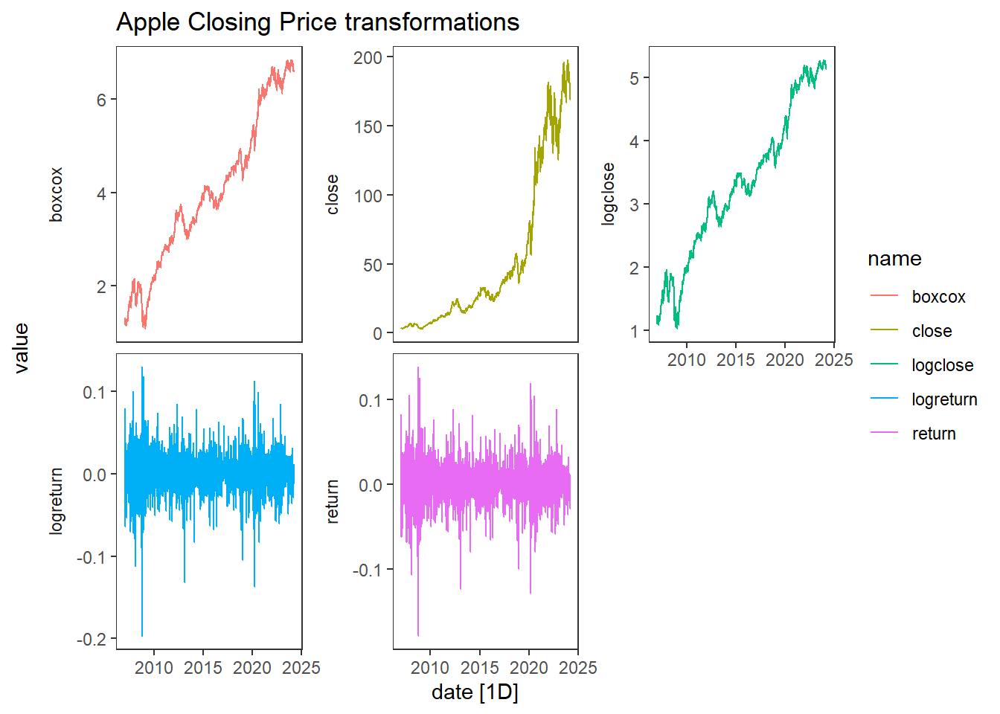
Time series components and Seasonal adjustment
Code on mathematical transformations
set.seed(1344)
library(tidyverse)
library(fpp3)
dat <- tibble(
date = seq(as.Date("2015-01-01"), as.Date("2020-12-31"), by = "1 day"),
t = 1:length(date),
Tt = 100+9*t/300 + .5*((t-1000)/200)^3+(.87*cos(2*pi*t/1200)+.42*sin(2*pi*t/600))*11,
St = (.94*cos(2*pi*t/365) -1.2*sin(2* pi*t/365))*13,
Rt = rnorm(length(date), sd = 15),
Yt = Tt + St + Rt
)
# -- Plotting Y and its components --
dat %>%
pivot_longer(cols = -c(date,t)) %>%
mutate(name = factor(name, levels = c("Yt", "Tt", "St", "Rt"))) %>% # to order the panels
ggplot(aes(x=date, y = value, col = name)) +
geom_line() + facet_wrap(~name, ncol = 1, scales = "free_y", strip.position = "left") +
theme(strip.placement = "outside", axis.title = element_blank(), legend.position = "none")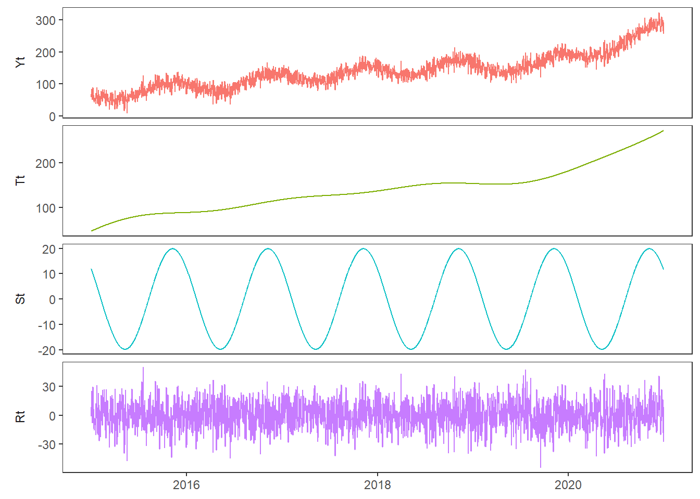
# -- Plotting seasonally adjusted Y --
ggplot(dat, aes(x = date, y = Yt-St)) +
geom_line() +
labs(title = "Seasonally adjusted", x = "")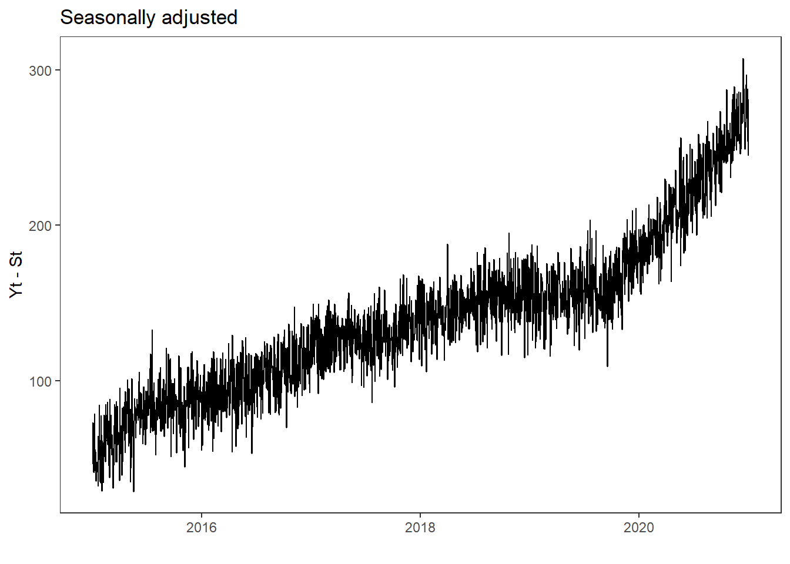
Moving averages
Code
library(fpp3)
library(tidyverse)
# ggplot theme:
theme_set(theme_bw() +
theme(panel.grid.major = element_blank(),
panel.grid.minor = element_blank()))
# -- Read in data: --
dat <- readxl::read_excel(
"data/NorwayEmployment_15-74years_bySex.xlsx") %>%
as_tibble() %>%
mutate(Quarter = str_replace(Quarter, "K","Q"),
Quarter = yearquarter(Quarter))
names(dat)[3] <- "Employed"
# -- Aggregating from Employed by sex to total --
dat <- dat %>%
group_by(Quarter) %>%
summarize(Employed = sum(Employed)) %>%
as_tsibble(index = Quarter) # Time series table
dat %>%
autoplot(Employed, lwd = 1, colour = "blue")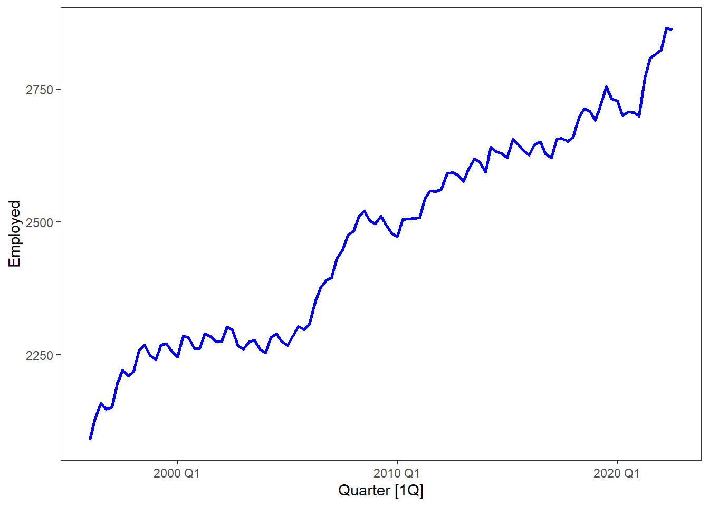
dat <- dat %>%
mutate(
`12-MA` = slider::slide_dbl(Employed, mean,
.before = 5, .after = 6, .complete = TRUE),
`2x12-MA` = slider::slide_dbl(`12-MA`, mean,
.before = 1, .after = 0, .complete = TRUE)
)
dat %>%
ggplot(aes(x=Quarter, y =Employed))+
geom_line(colour = "gray") +
geom_line(aes(y = `2x12-MA`), colour = "#D55E00") +
theme_bw()+
labs(y = "Persons (thousands)",
title = "Total employment in US retail")Warning: Removed 12 rows containing missing values (`geom_line()`).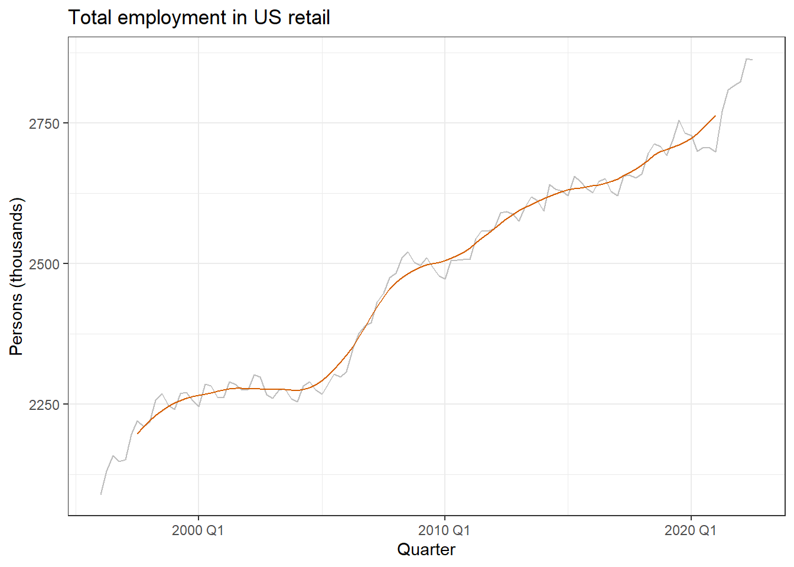
Classical decomposition
Code
dat %>%
model(
classical_decomposition(Employed, type = "additive")
) %>%
components() %>%
autoplot()Warning: Removed 2 rows containing missing values (`geom_line()`).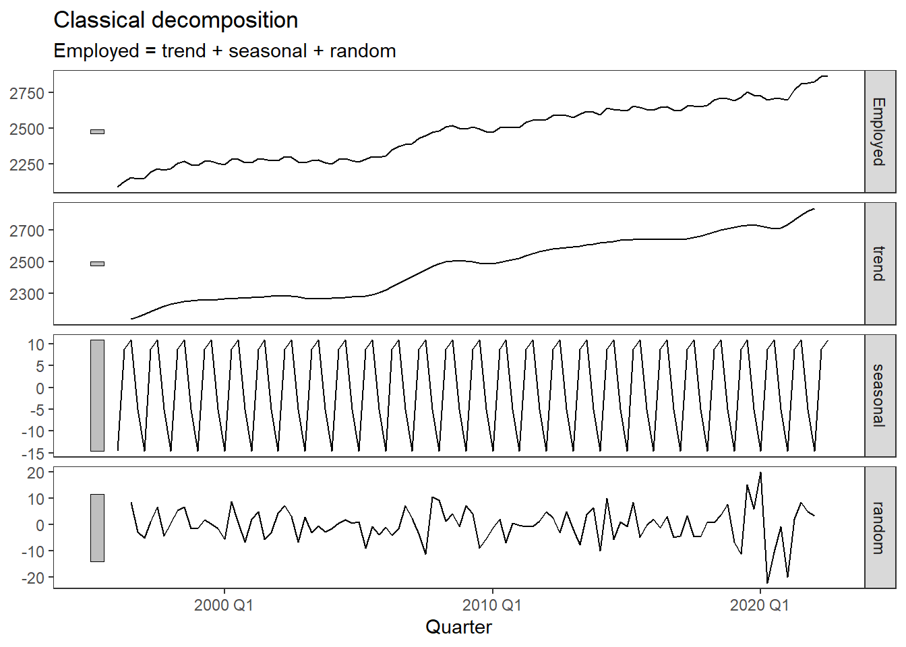
Statistics agencies: X11 and SEATS
Code
dat %>%
model(
classical = classical_decomposition(Employed,
type = "multiplicative"),
x11 = X_13ARIMA_SEATS(Employed ~ x11()),
seats = X_13ARIMA_SEATS(Employed ~ seats())
) %>%
components() %>%
mutate(random = ifelse(.model == "classical",
random,
irregular)) %>%
autoplot(lwd = 1)Warning: Removed 2 rows containing missing values (`geom_line()`).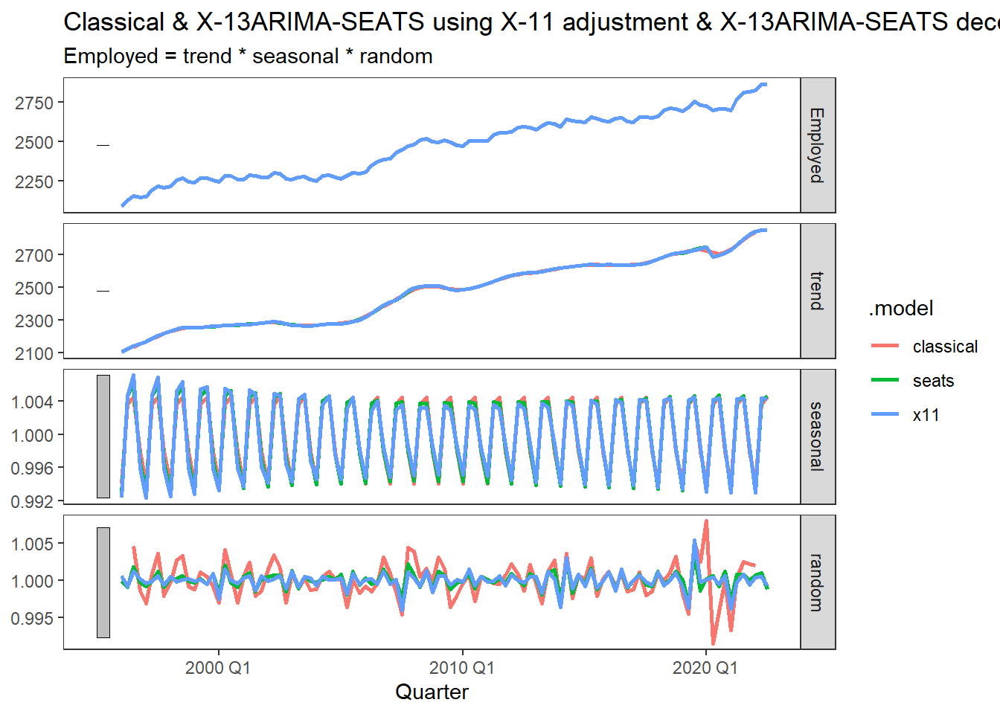
STL: Seasonal and Trend decomposition using Loess
Code
dat %>%
model(
STL0 = STL(Employed),
STL1 = STL(Employed ~ trend(window = 5) + # default 7
season(window = 19), # default 11
robust = FALSE)
) %>%
components() %>%
autoplot()
Exercises
- Use the global_economy data, select a country (e.g. Austria). Plot GDP, GDP per capita and GDP per capita inflation adjusted, GDP inflation adjusted.
Solution
library(fpp3)
library(tidyverse)
dat <- global_economy %>%
filter(Country == "Austria")
dat %>% autoplot(GDP)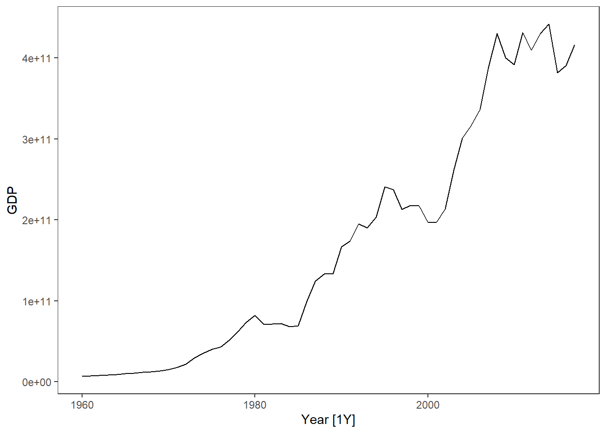
dat %>% autoplot(GDP/Population)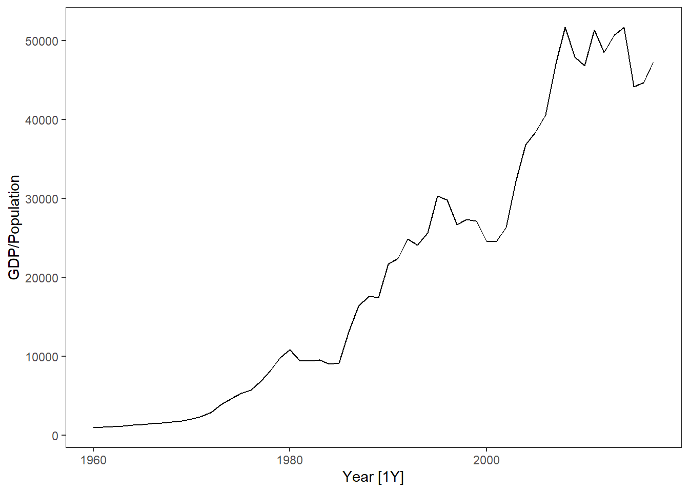
dat %>% autoplot(GDP/Population * 100/CPI)
dat %>% autoplot(GDP * 100/CPI)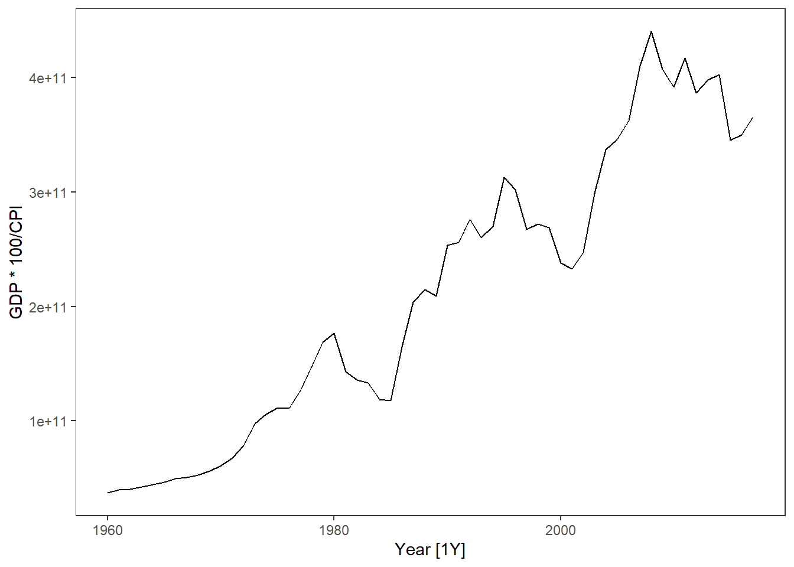
- In the global_economy data set, the CPI has a reference year of 2010. Do the necessary changes to inflation adjust GDP per capita with 1990 as reference year.
Solution
library(fpp3)
library(tidyverse)
dat <- global_economy %>%
filter(Country == "Austria")
# -- Extracting the CPI in 1990: --
cpi1990 <- dat %>% filter(Year ==1990) %>% pull(CPI)
# -- Transforming such that CPI1990 is 100 in 1990: --
dat <- dat %>% mutate(CPI1990 = CPI / cpi1990 * 100)
# -- Plotting Inflation adjusted GDP per capita: --
dat %>% autoplot(GDP/Population * 100/CPI1990) +
labs(y = "Inflation adjusted GDP per capita (1990 US$)") +
geom_line(aes(y= GDP/Population * 100/CPI), col = 2)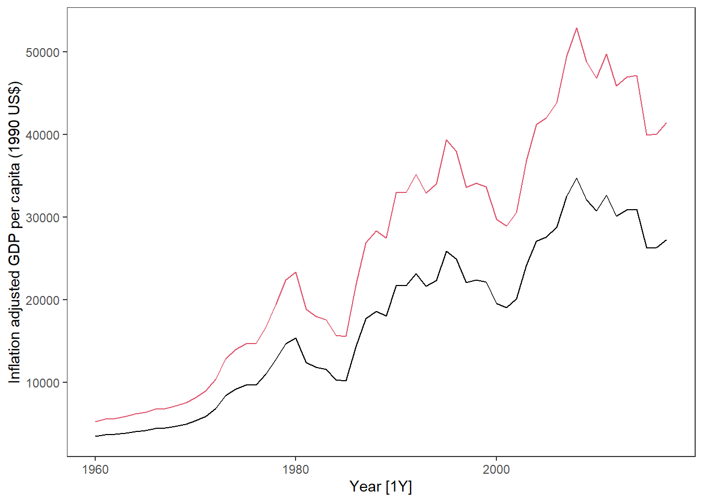
# -- Comparing the two CPIs: --
dat %>%
pivot_longer(cols = c(CPI,CPI1990)) %>%
ggplot(aes(x = Year, y = value, col = name)) + geom_line()+
geom_hline(yintercept = 100) +
scale_color_manual(values = c("red","blue"))+
geom_segment(x = 1990,xend = 1990, y = -Inf, yend =100, lty = 2, col = "blue")+
geom_segment(x = 2010,xend = 2010, y = -Inf, yend =100, lty = 2, col = "red")+
labs(title = "Differences between CPI with reference year 1990 and 2010",
y = "Consumer Price Index") +
theme(legend.title = element_blank())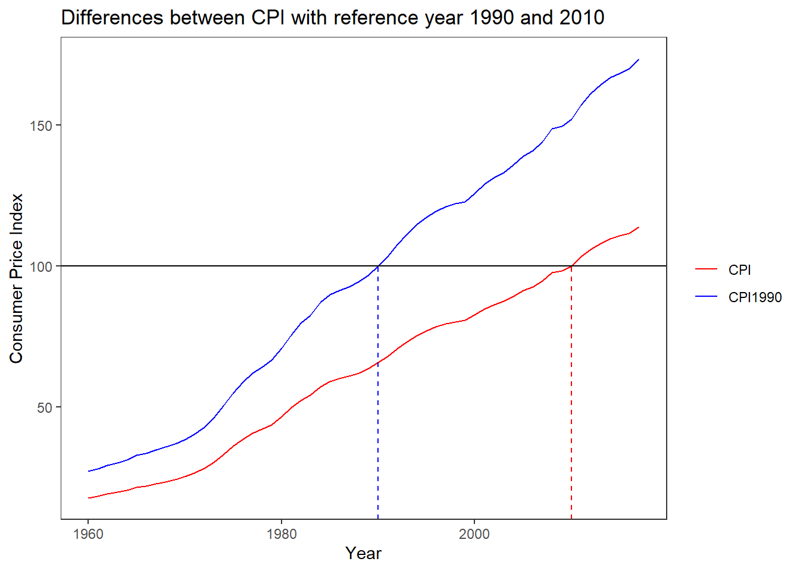
Use the quantmod package to download data for another stock. What transformation would you prefer for this stock?
Use the guerrero feature to select a \lambda for the Box-Cox transformation on the data from the previous exercise.